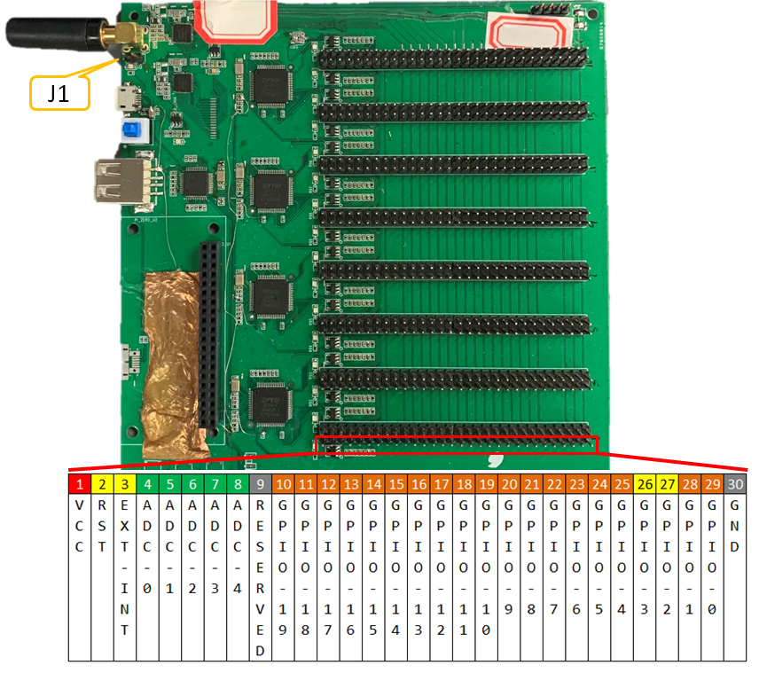
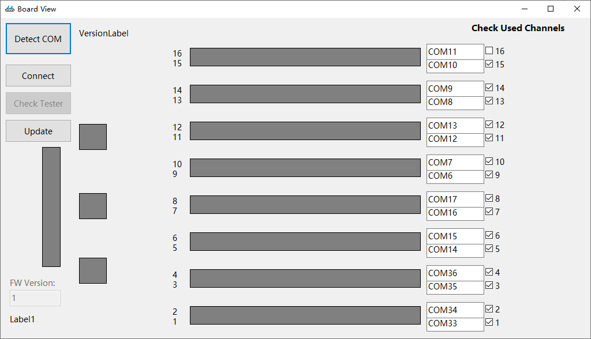
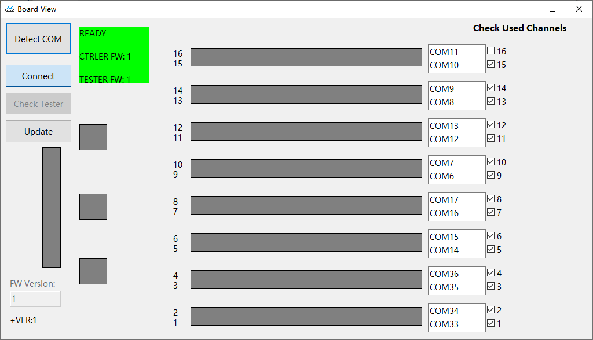
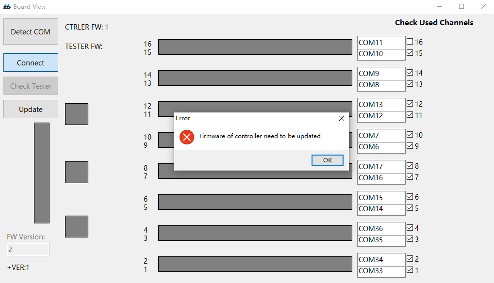
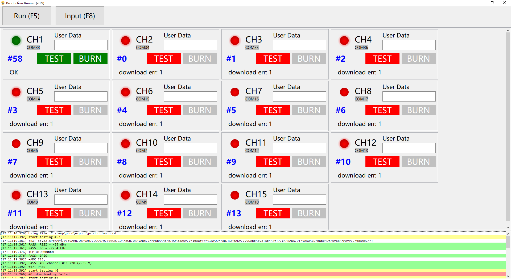
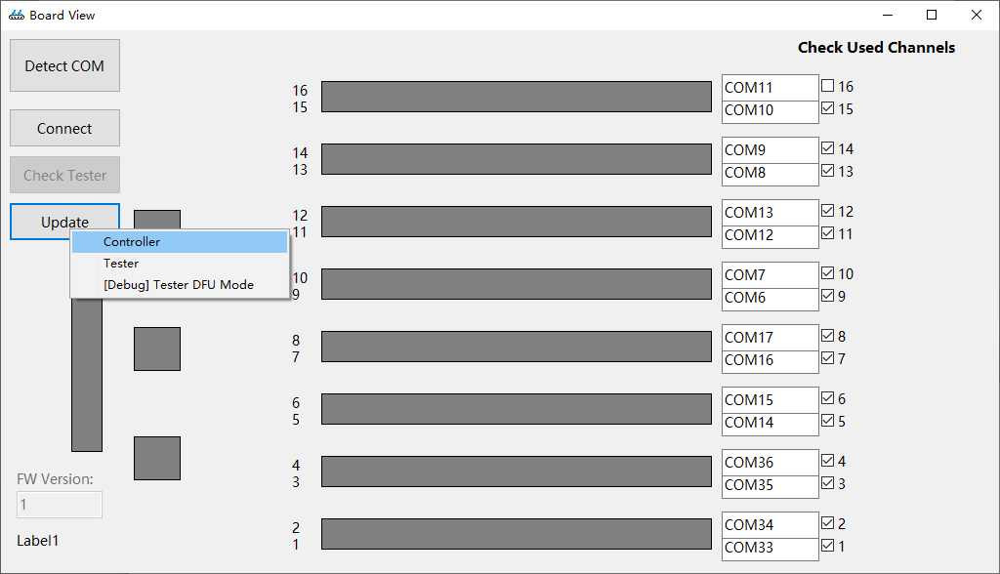

ING918xx 系列量产套件可以高效地进行产品量产，主要特性如下：
- 支持 15 路并行烧录；
- 内置射频、ADC、GPIO 等测试；
- 支持自定义测试项；
- 支持产品个人化（基于 Python）；
- 支持在线、离线两种方式。
- 软件仅用于 64bit Windows
- 不支持自定义测试项
- 不支持离线方式
1. 量产板说明
量产板板载 8 组共 16 路接口，其中第 1~15 路可用于产品量产，第 16 路保留。每路接口如下图。

如下表所示，使用不同的功能需要连续不同的引脚。
| 功能 | 引脚 |
|---|---|
| 供电 | VCC、GND |
| 烧录 | GPIO-2、GPIO-3 RST、EXT_INT |
| 射频测试 | GPIO-2、GPIO-3 |
| ADC 测试 | GPIO-2、GPIO-3 对应的 ADC 通道 (要测试 AIN-X 通道，则将产品的 AIN-X 连接至量产板的 ADC-X) |
| GPIO 测试 | GPIO-2、GPIO-3 对应的 GPIO (要测试 GPIO-X，则将产品的 GPIO-X 连接至量产板的 GPIO-X) |
量产板板载两颗 ING918xx 芯片，其中一颗用于控制（CTRLER），另一颗用于测试（TESTER）。 短接量产板上的固件升级跳帽（ J1 ），然后将量产板连接到计算机，CTRLER 即进入升级状态。
2. 软件使用说明
量产软件包含两个工具：向导工具用来检测和准备量产板，生成量产数据；执行工具用来进行实际的生产（测试、烧录）。
2.1 安装
- Production Suite
- 串口驱动
将量产板连接到 PC 后，如果未能自动识别并安装驱动，手动 下载 并安装串口驱动。 驱动程序正确安装后，可从设备管理器中看到 16 个串口。
- PowerShell
PowerShell 是微软开发的开源软件，可以从 Windows 10 商店安装，或者手动 下载 安装。
2.2 准备工作
将量产板连接到 PC，从 Windows 开始菜单 “Production Suite for ING918xx” 里打开向导工具（Wizard）。
2.2.1 准备量产板
首先在 “量产板” 页面点击 “设置” 打开 “Board View” 窗口。首次运行该程序时，点击 “Detect COM” 按钮进行自动检测（此过程可能需要十几秒钟）。 检测完成后，界面上会罗列出所有串口号。

点击 “Connect” 按钮，向导工具会尝试与 CTRLER 通信并读取版本（成功连接后，量产板上会呈现一段灯光闪动效果）。 成功后，“Check Tester” 变为可用状态，点击该按钮， 向导工具会尝试与 TESTER 通信并读取版本。如果两者的版本都合适，向导工具会给出 “READY” 的提示信息，说明该 PC 上的量产板已经准备就绪，可以用于生产，如下图所示：

如果 CTRLER 版本不合适，向导工具会提示需要升级，如下图所示。请参考后文进行 固件升级。

2.2.2 设置内置测试项
内置测试项由量产套件自动完成，不需要客户开发程序。
- 射频测试：评估产品频偏、功率两个指标；
- GPIO 测试：检测产品的各 GPIO 管脚高、低电平是否正常；
- ADC 测试：评估 ADC 读取值误差是否在预定范围内。
以上各测试项目都可以按照需要启用或者不启用。
2.2.2 设置自定义测试程序
对于以下场景，内置测试项目功能无法满足需求，客户可以自行开发测试程序，并由量产工具自动执行：
- 检查内部的传感器是否正常；
- ……
2.2.3 设置待烧录程序
如果待烧录程序使用了 Pascal 脚本， 则需要转换为 Python。
2.2.5 个人化数据
个人化数据由 Python 动态生成。量产套件在生产时会维护一个全局计数器，Python 脚本生成个人化数据可以参考该计数器。
在生产时，除了计数器，还可以为每一产品输入一段字符串数据（用户数据），这一数据也会传递给 Python 脚本。
要使用这一数据，Python 脚本需要用 on_start_bin2 替换原有的 on_start_bin，user_data 参数即为该字符串：
def on_start_bin2(batch_counter: int, bin_index: int, data: bytes, \
user_data: str)::
需要调试 Python 脚本时，可以找到安装目录下的 “prod_suite.ini”，修改 show_wnd 参数：
[options]
show_wnd=1
此后，烧录时会显示控制台窗口。如遇异常，烧录程序将自动等待一段时间才退出，以便开发者查看错误信息。
2.2.4 导出数据
点击 “导出数据包” 导出生产所需的完整数据。该数据包是 “自包含” 的。
2.3 进行生产
从 Windows 开始菜单 “Production Suite for ING918xx” 里打开生产工具（Runner），选择生产数据包里的“.prod”文件。
生产工具将自动连接到量产板，成功连接后，量产板上同样会呈现一段灯光闪动效果。
按下 F8 输入焦点将定位到第一个生产通道的用户数据输入区。在用户数据输入区里输入回车（Enter/Return）或者制表符（Tab）， 输入焦点会移动到下一个生产通道（回车可以循环切换）。这种切换方式适合使用扫码枪输入数据。
按下 F5 开始生产。如果启用了测试，则首先进行测试，通过后再烧录程序。如果未启用测试，则直接烧录程序。
完成一轮产品的生产后（烧录成功或者测试失败），“Run” 按钮恢复为可点击状态，允许进行下一轮生产。
下图显示了只在一路生产通道上连接了产品时，一轮生产完成后的界面：

2.4 固件升级
升级量产固件时需要首先升级 CTRLER，然后升级 TESTER。
- 升级 CTRLER
短接量产板上的固件升级跳帽，然后接入 PC，打开向导工具，进入 “Board View”，直接点击 “Update” → “Controller”：

升级完成后，断开量产板上的固件升级跳帽，重新连接到 PC，重新启动向导工具。进入 “Board View”， 点击 “Connect”，检查是否可以获取 CTRLER 的版本。
- 升级 TESTER
继续上面的步骤，点击 “Update” → “Tester”：
升级完成后，重新连接到 PC。